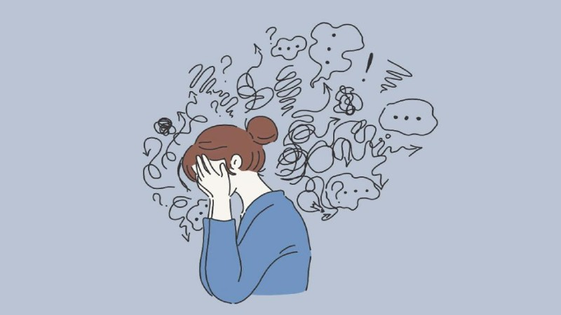
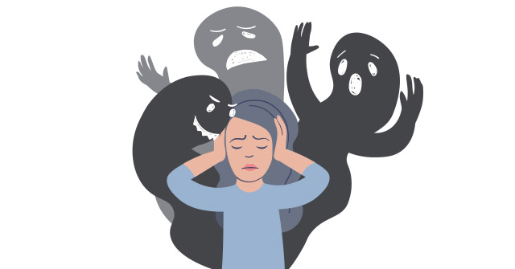
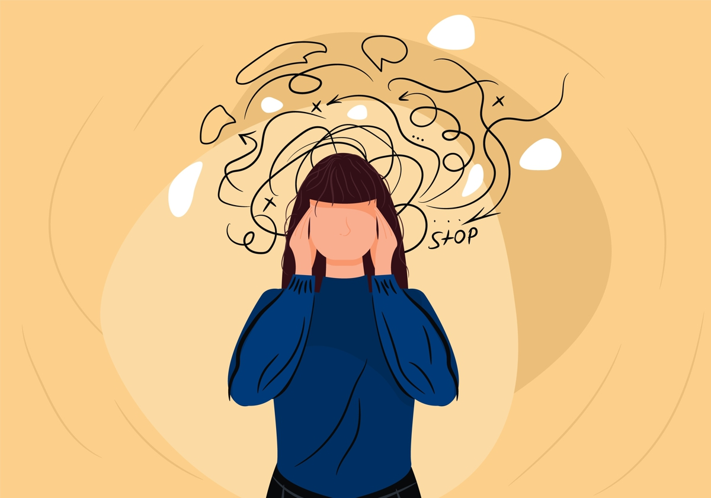

Trastornos Mentales


Top 8 de Trastornos más comunes
- Trastornos de ansiedad
- Depresión
- Trastorno bipolar
- Trastorno de estrés postraumático
- Esquizofrenia
- Trastornos del comportamiento alimentario
- Trastornos del comportamiento disruptivo y sidocial
- Trastornos de neurodesarollo
¿Cómo cuidar de tu salud mental?
- Ten una red de apoyo
- Evita el sedentarismo
- Aliméntate bien
- Descansa bien
- Crea rutinas balanceadas
- Ve a terapia si es posible
Depresión
La depresión es una enfermedad común pero grave que interfiere con la vida diaria, con la capacidad para trabajar, dormir, estudiar, comer y disfrutar de la vida. La depresión es causada por una combinación de factores genéticos, biológicos, ambientales y psicológicos. Algunas investigaciones indican que el riesgo genético para la depresión es el resultado de la influencia de varios genes que actúan junto con factores ambientales y otros factores de riesgo. Algunos tipos de depresión tienden a darse en familias. Sin embargo, la depresión también puede ocurrir en personas sin antecedentes familiares de depresión. No todas las personas con enfermedades depresivas experimentan los mismos síntomas. La gravedad, frecuencia y duración de los síntomas varían dependiendo de la persona y su enfermedad en particular. DATOS CLAVE - La depresión es una enfermedad que se caracteriza por una tristeza persistente y por la pérdida de interés en las actividades con las que normalmente se disfruta, así como por la incapacidad para llevar a cabo las actividades cotidianas, durante al menos dos semanas. - Las personas con depresión suelen presentar varios de los siguientes síntomas: pérdida de energía; cambios en el apetito; necesidad de dormir más o menos de lo normal; ansiedad; disminución de la concentración; indecisión; inquietud; sentimiento de inutilidad, culpabilidad o desesperanza; y pensamientos de autolesión o suicidio. - La depresión no es un signo de debilidad. Se puede tratar con terapia o intervención psicológica, con medicación antidepresiva o con una combinación de ambos métodos. - Las personas expuestas a violencia frecuentemente experimentan una variedad de reacciones que incluye: ansiedad, estrés, frustración, temor, irritabilidad, enojo, dificultad de concentrarse, pérdida del apetito y pesadillas.
Narcisismo
El narcisismo es el amor que se dirige un sujeto a sí mismo. Alude al mito de narciso, que se ahogó al intentar besar su propia imagen reflejada en el agua. Utilizan a los demás como objeto de satisfacer sus deseos, su autoestima. Carecen de empatía. Animosos, optimistas, decididos. Se creen personas dignas de admiración y únicas. Piensan que son objeto de endivia. Suelen emplear la racionalización como mecanismo principal de defensa. R. C. Cloninger señala que, en las dimensiones de su temperamento, estas personas presentan una alta búsqueda de sensaciones o novedades, una alta evitación de daño y una alta dependencia de recompensa. El trastorno de personalidad narcisista (uno de varios tipos de trastornos de la personalidad) es un trastorno mental en el cual las personas tienen un sentido desmesurado de su propia importancia, una necesidad profunda de atención excesiva y admiración, relaciones conflictivas y una carencia de empatía por los demás. Sin embargo, detrás de esta máscara de seguridad extrema, hay una autoestima frágil que es vulnerable a la crítica más leve. Los signos y síntomas del trastorno de la personalidad narcisista y la gravedad de los síntomas son variables. Las personas con este trastorno pueden: - Tiene un sentido grandioso de su propia importancia, prepotente y arrogante. - Lo absorben fantasías de éxito ilimitado, poder, brillantez, belleza, o amor ideal - Se considera especial y único: solo puede ser comprendido por, y solo debería asociarse con, otras personas especiales o de alto estatus personal o institucional. - Requiere excesiva y constante admiración (es un síntoma que denota una baja autoestima y una gran preocupación por hacer bien el trabajo y por cómo son vistos por los demás). Espera que se reconozca su superioridad, incluso sin logros que la justifiquen y para ello exagera los logros y los talentos - Tiene un sentido exagerado y no equitativo de sus propios derechos. Piensa que se le debe todo. Tiene un sentido de superioridad con irrazonables expectativas de un trato especialmente favorable o de una aceptación automática de sus deseos. Puede monopolizar las conversaciones y despreciar o mirar con desdén a personas que ellos perciben como inferiores. - En sus relaciones interpersonales es explotador. Se aprovecha de los demás para conseguir sus propios fines (espera que se les dé todo lo que desee, sin importar lo que ello suponga para los demás, y puede asumir que los demás están totalmente interesados en su bienestar). - Carece de empatía, por incapacidad o por falta de voluntad y es reacio a reconocer o identificar las necesidades y sentimientos de los demás. - Es frecuentemente envidioso de los demás o cree que los demás le tienen envidia (pueden llegar a devaluar a personas que hayan recibido una felicitación al pensar que ellos son más merecedores de la misma). Por ellos se comporta de manera arrogante o altanera, dando la impresión de engreídos, jactanciosos y pretenciosos.

Esquizofrenia
La esquizofrenia es una enfermedad mental grave que afecta la forma en que una persona piensa, siente y se comporta. Las personas con esquizofrenia pueden parecer como si hubieran perdido el contacto con la realidad, lo que puede ser angustioso para ellas, sus familiares y amigos. Los síntomas de la esquizofrenia pueden dificultar la participación en las actividades cotidianas o habituales, pero existen tratamientos eficaces. Muchas personas que reciben tratamiento pueden participar en la escuela o el trabajo, lograr su independencia y disfrutar de las relaciones personales. Es importante reconocer los síntomas de la esquizofrenia y buscar ayuda lo antes posible. Por lo general, las personas con esquizofrenia son diagnosticadas entre los 16 y los 30 años, después de un primer episodio de psicosis. Comenzar el tratamiento lo antes posible después de este primer episodio es un paso importante hacia la recuperación. Sin embargo, hay investigaciones que muestran que los cambios graduales en el pensamiento, el estado de ánimo y el funcionamiento social a menudo aparecen antes del primer episodio de psicosis. La esquizofrenia no es frecuente en los niños pequeños. Los síntomas de la esquizofrenia pueden ser diferentes entre una persona y otra, pero generalmente se dividen en tres categorías principales: psicóticos, negativos y cognitivos.
Ansiedad
La ansiedad ocasional es parte normal de la vida. Muchas personas se preocupan por cosas como los problemas de la salud, el dinero o la familia. Sin embargo, las personas con trastorno de ansiedad generalizada se preocupan extremadamente o se sienten muy nerviosas con mayor frecuencia por estas y otras cosas, incluso cuando hay poca o ninguna razón para preocuparse. Por lo general, este trastorno involucra una sensación persistente de ansiedad o pavor que interfiere en la forma en que lleva su vida. No es lo mismo que preocuparse de vez en cuando por las cosas o sentirse ansioso debido a eventos estresantes en la vida. Las personas que tienen este trastorno sienten ansiedad con frecuencia durante meses y hasta años. El trastorno de ansiedad generalizada se desarrolla lentamente. A menudo, comienza alrededor de los 30 años, aunque también puede ocurrir en la infancia. El trastorno es más frecuente en las mujeres que en los hombres. Las personas con este trastorno pueden: - preocuparse demasiado por las cosas diarias; - tener problemas para controlar sus preocupaciones o sentimientos de nerviosismo; - ser conscientes de que se preocupan mucho más de lo que deberían; - sentirse inquietas o tener dificultad para relajarse; - tener problemas para concentrarse; - sorprenderse fácilmente; - tener problemas para dormir o para permanecer dormidas; - cansarse fácilmente o sentirse cansadas todo el tiempo; - tener dolores de cabeza, musculares o estomacales, o molestias inexplicables; - tener dificultad para tragar; - tener temblores o tics (movimientos nerviosos); - sentirse irritables o con los nervios de punta; - sudar mucho, sentirse mareadas o que les falta el aire; - tener que ir al baño a menudo.
Transtornos alimenticios
Los trastornos de la alimentación, también llamados trastornos de la conducta alimentaria, son enfermedades médicas graves con una influencia biológica que se caracterizan por alteraciones graves de las conductas alimentarias. Aunque hay ocasiones en que muchas personas se pueden preocupar por su salud, peso o apariencia, algunas se fijan excesivamente o se obsesionan con la pérdida de peso, el peso o la forma corporal y el control de los alimentos que consumen. Estos pueden ser signos de un trastorno alimentario. Las personas con trastornos de alimentación no eligieron tenerlos. Estos trastornos pueden afectar la salud física y mental de quien los padece y, en algunos casos, hasta pueden poner en peligro la vida. Sin embargo, con tratamiento, las personas pueden recuperarse por completo de estos trastornos. Los trastornos de la alimentación pueden afectar a personas de cualquier edad, origen racial y étnico, peso corporal y género. Incluso las personas que parecen ser saludables, como los atletas, pueden tener estos trastornos y estar extremadamente enfermas. Las personas con trastornos de la alimentación pueden tener un bajo peso corporal, un peso normal o sobrepeso. En otras palabras, no se puede saber si alguien tiene un trastorno de la alimentación con solo mirarlo. La causa exacta de los trastornos de la alimentación no se comprende completamente, pero las investigaciones sugieren que una combinación de factores genéticos, biológicos, conductuales, psicológicos y sociales puede aumentar el riesgo de tener este tipo de trastorno. Los trastornos de la alimentación más frecuentes incluyen la anorexia nerviosa, la bulimia nerviosa, el trastorno por atracón y el trastorno por evitación y restricción de la ingesta de alimentos. Cada uno de estos trastornos está asociado con diferentes síntomas, pero a veces coinciden.